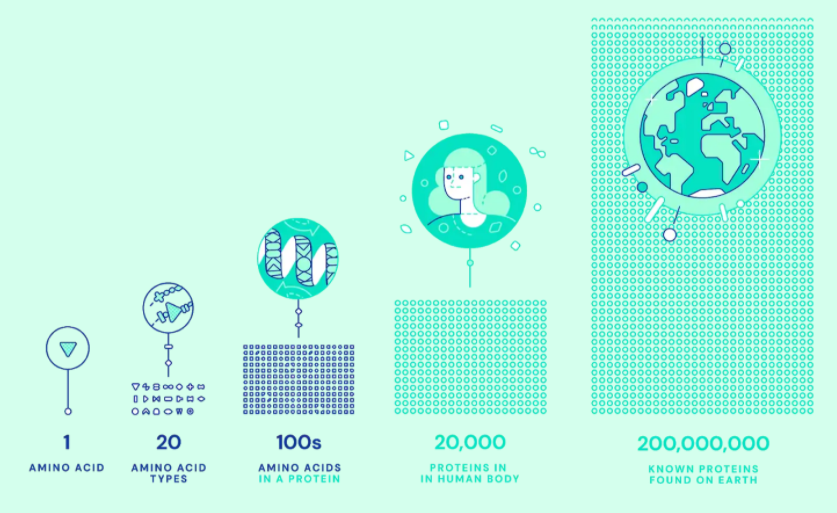
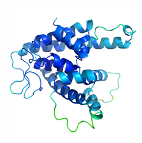
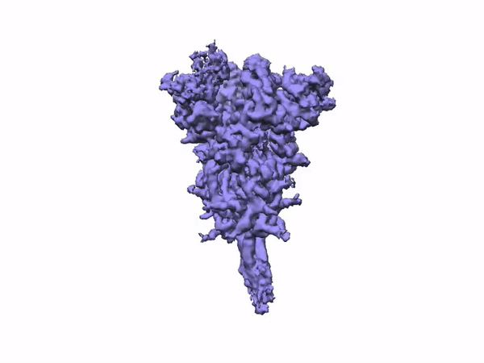
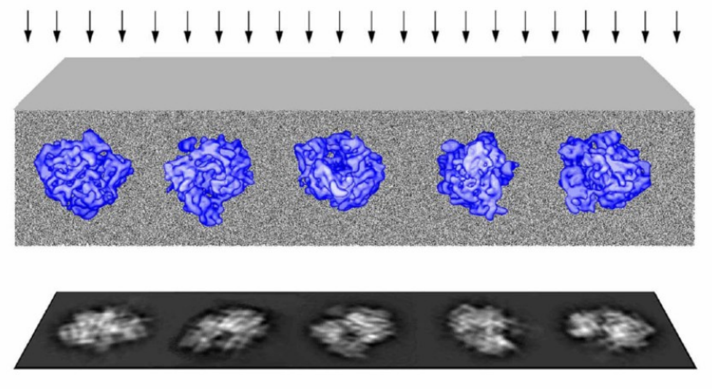
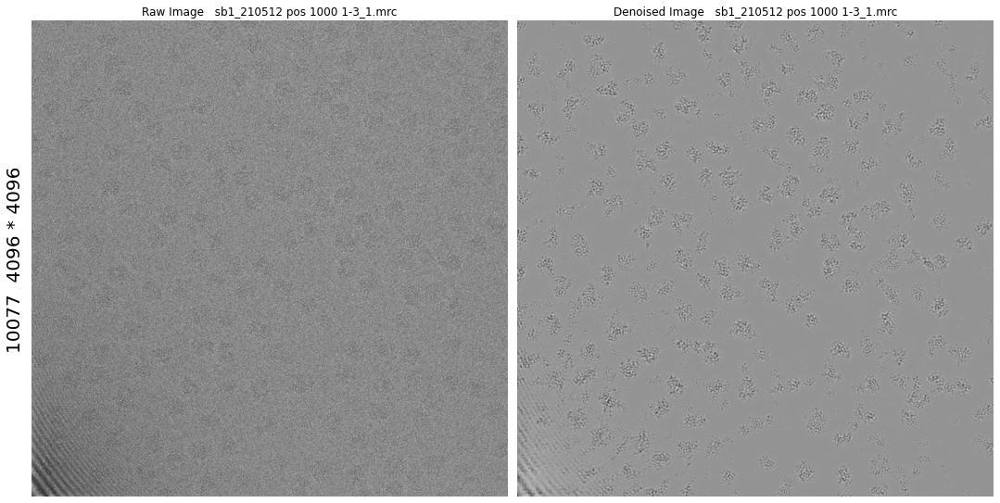
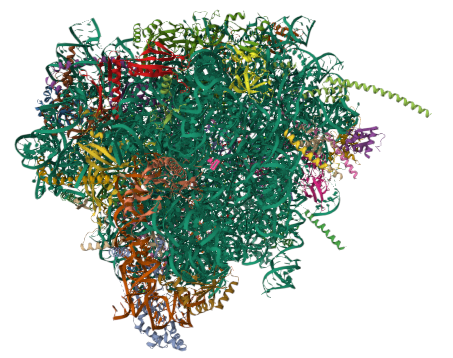

Cryo-EM 背景：為什麼要用冷凍電鏡看蛋白質#
本章重點
蛋白質的立體結構決定其生物功能，解出結構是理解生命現象、開發藥物與疫苗的關鍵一步。
X 光晶體學、NMR、cryo-EM 是三種主流結構測定方法，各有適用範圍與限制。
cryo-EM 的核心操作是「急速冷凍＋低劑量電子成像」，目的是在不破壞脆弱樣品的前提下留下結構資訊。
低劑量成像的代價是極低訊噪比（SNR），這是貫穿本書後續章節、也是第 7 章模擬資料要重現的核心限制。
蛋白質結構為什麼重要#
蛋白質負責催化代謝反應、複製 DNA、感應外界刺激、提供細胞結構、運輸分子——幾乎所有生命活動都仰賴蛋白質正確摺疊成特定的三維形狀。一段胺基酸序列如何摺疊成穩定的立體結構，是數十年來懸而未決的「蛋白質摺疊問題（protein folding problem）」。近年 AlphaFold 等深度學習方法在序列預測結構上有重大突破，但這類模型以已解出的晶體結構訓練，對抗體、突變序列，或多重序列比對（MSA）資訊稀少的蛋白質，預測結果仍需要實驗驗證。目前地球上已知蛋白質約 2 億種、每年新增數千萬種，但確切解出 3D 結構的只占極小一部分——這正是結構生物學持續需要更快、更準確實驗方法的原因。
{kind=link}

Fig. 1 從單一胺基酸到蛋白質，再到物種與地球尺度的已知蛋白質數量。#
{kind=link}

Fig. 2 胺基酸鏈摺疊後形成具功能的立體結構（ribbon 表示法）。#
三種結構測定方法的比較#
方法 |
原理 |
優點 |
主要限制 |
|---|---|---|---|
X 光晶體學（X-ray crystallography） |
蛋白質結晶後，以繞射花樣反推電子密度 |
解析度可達原子級 |
難以結晶（尤其膜蛋白）；晶格接觸可能扭曲天然構形；繞射強度只給出 Fourier 係數的模，相位須另外求解（Bendory et al. 2020, p.60–61） |
核磁共振（NMR） |
量測原子核間的偶極耦合，推算原子間距離 |
可在近生理的溶液環境下量測，能捕捉動態變化 |
僅適用於約 50 kDa 以下的小型蛋白質（Bendory et al. 2020, p.60–61） |
冷凍電顯（cryo-EM） |
急速冷凍後以電子束對單一顆粒成像，用統計方法重建 3D 結構 |
不需結晶；每顆粒獨立成像，原則上可同時解出多種功能構型；理論所需分子數遠低於 X 光晶體學（約 \(10^4\) vs \(10^8\)，Singer & Sigworth 2020, p.165–166） |
單張影像訊噪比極低，須靠大量影像統計平均才能取得可靠結構 |
cryo-EM 的優勢不只是「不需結晶」。因為每一顆粒子都是獨立成像，同一份樣品裡混雜的不同構型（例如藥物結合前後、不同反應中間態）原則上都能被分開重建，這是晶體學的整體平均訊號難以做到的。這也是 cryo-EM 近年被廣泛用於疫苗與藥物開發的原因之一——例如 SARS-CoV-2 spike 蛋白的 cryo-EM 結構，就直接支援了疫苗設計。
{kind=link}

Fig. 3 SARS-CoV-2 spike 蛋白的 cryo-EM 密度圖，是 cryo-EM 支援藥物與疫苗開發的代表案例。#
cryo-EM 成像原理：急凍、低劑量、穿透式電子顯微鏡#
cryo-EM 樣品製備的核心是「玻璃態冰（vitreous ice）」：把含蛋白質的溶液以毫秒級速度急速冷凍，讓水分子來不及排列成結晶冰。這麼做有三個目的：避免結晶冰的晶格破壞脆弱的分子結構、避免結晶冰產生的強對比訊號淹沒微弱的蛋白質訊號，以及讓分子在被固定的瞬間仍保持接近生理狀態的構形（Singer & Sigworth 2020, p.166–167）。
樣品準備好後，穿透式電子顯微鏡（transmission electron microscope, TEM）以電子束穿過冰層中隨機取向的顆粒。多數電子直接穿透只貢獻背景雜訊；真正產生訊號的是電子與分子交互作用後的相位偏移（phase contrast）。每一顆粒子在感光元件上留下的，是它在那個瞬間取向下的一張 2D 投影影像——這正是後續整個計算流程要解決的核心問題：從大量方向未知的 2D 投影，反推出一個共同的 3D 結構（詳見第 6 章）。
{kind=link}

Fig. 4 電子束穿過冰層中隨機取向的顆粒，在下方形成一張 2D 投影影像。#
關鍵限制：低劑量 → 極低訊噪比#
急速冷凍能保存構形，但無法解決另一個根本問題：電子束本身會破壞生物分子。為了讓同一顆粒子撐過整個成像過程而不被輻射損傷嚴重破壞，實驗上必須把電子劑量壓得很低（典型僅約 20 e⁻/Ų，Sigworth 2016, p.65，遠低於能清楚看見單一顆粒所需的劑量）。
低劑量的直接代價是訊噪比（signal-to-noise ratio, SNR）極低——常態上遠低於 1（0 dB），有時甚至到 −20 dB，也就是雜訊功率是訊號的百倍以上（Bendory, Bartesaghi & Singer 2020, p.60, 62）。單張顆粒影像的高解析內容因此無法被直接量測，必須依賴數萬到數十萬張影像的統計平均，才能把訊號從雜訊中「拉」出來（Sigworth 2016, p.57–58）。這正是第 7 章要用 ASPIRE 產生合成資料時，刻意把訊噪比設在 SNR = 0.1 這個量級的原因：它不是隨意取的數字，而是真實 cryo-EM 實驗資料的典型狀況。
{kind=link}

Fig. 5 原始 micrograph（左）訊噪比極低，肉眼幾乎難以辨認顆粒；經過影像處理（右）後才能看出結構。#
低 SNR 這個限制會貫穿第 6 章的每一個計算階段：從 CTF 估計、粒子挑選，到 2D／3D 分類與重建，本質上都是「如何在極低訊噪比下，把散落在成千上萬張影像裡的一致結構訊號找出來」的統計問題。
{kind=link}

Fig. 6 把成千上萬張低 SNR 投影統計平均、重建之後，最終能得到解析度足以配出原子模型的 3D 結構——這是第 6 章整條計算流程要達成的目標。#